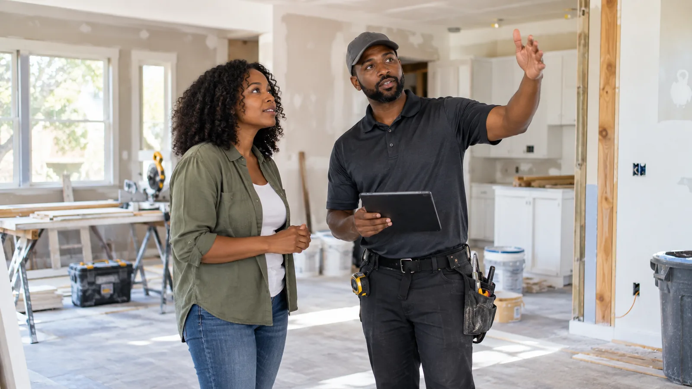

Clean Spaces
I’m getting my house renovated, what should I expect?

The house will change in stages
Renovation rarely moves in one straight line. One room may look almost finished while another is still open to framing, sanding, painting, or installation work. Materials come in and out, workers move through the home, and access to kitchens, bathrooms, hallways, or entrances can change from day to day. Ask the contractor which areas will be active, which rooms will be protected, and which parts of the house should stay clear.
Cleaning during the project matters
A renovation does not have to stay spotless while work is happening, but basic cleanup can make the project easier to live with. Dust and scraps can spread from the work zone into nearby rooms, especially when doors are opened frequently or air is moving through the house. Regular sweeping, trash removal, and protection around pathways can keep the project from feeling completely out of control.
The final clean is different from daily cleanup
Construction crews may remove major debris and leave the work area broom clean, but that is not the same as detailed cleaning. Fine dust can settle on cabinets, trim, floors, fixtures, glass, ledges, and surfaces that were never part of the renovation itself. A final cleaning should focus on the finished space and the areas people will actually touch and use.
Plan around the return to normal life
If furniture is being delivered, family members are moving back into rooms, or the kitchen is reopening, plan enough time for cleanup before those things happen. It is easier to clean an empty room than one filled with furniture and boxes. If the project is large, you may also want to coordinate window cleaning or floor care after the dustier work is finished.
Plan the cleanup around the renovation
The timing changes depending on whether work is still active, painting is finished, or the home is almost ready to use again.